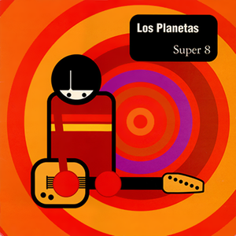

Los Planetas - Super 8



Género: Alternative
Sello: Octubre
Año: 2014-06-30
Total de pistas: 10
Tracklist:
1. De Viaje (4:14) 

2. Qué Puedo Hacer (3:05)
3. Si Está Bien (3:23)
4. 10.000 (6:22)
5. Jesús (3:06)
6. Estos Últimos Días (4:33)
7. Brigitte (2:46)
8. Rey Sombra (4:21)
9. Desorden (4:01)
10. La Caja Del Diablo (9:12)